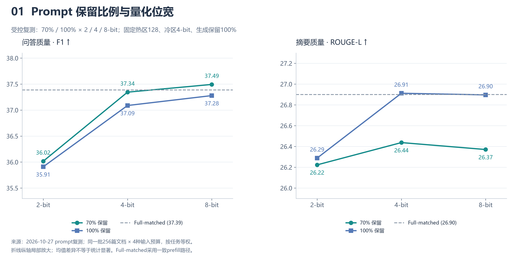
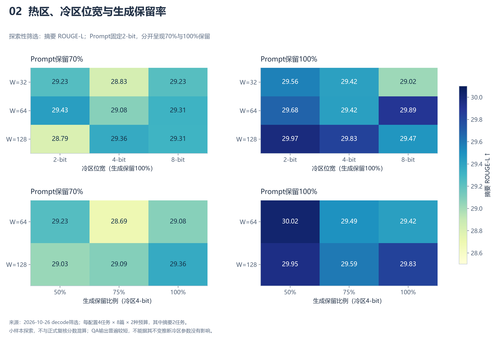
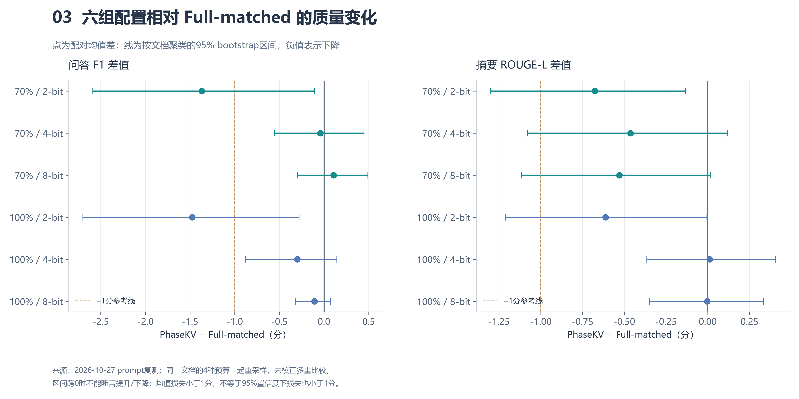
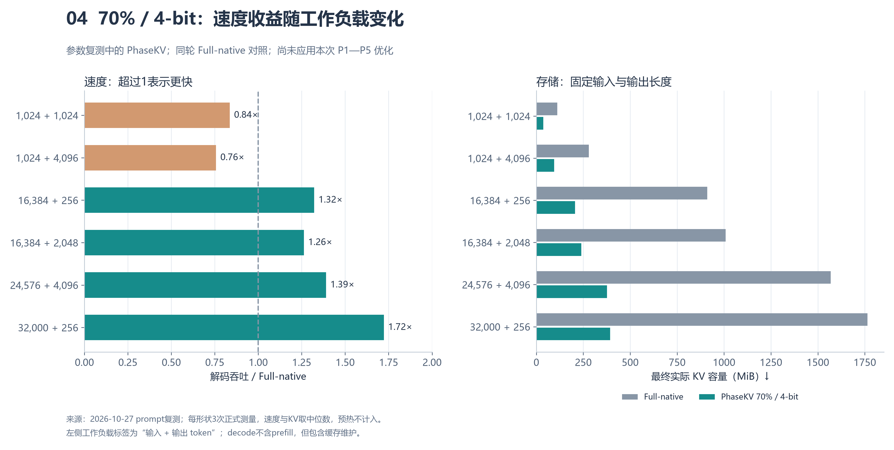
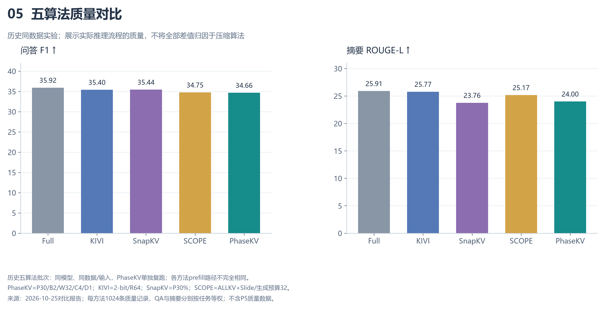
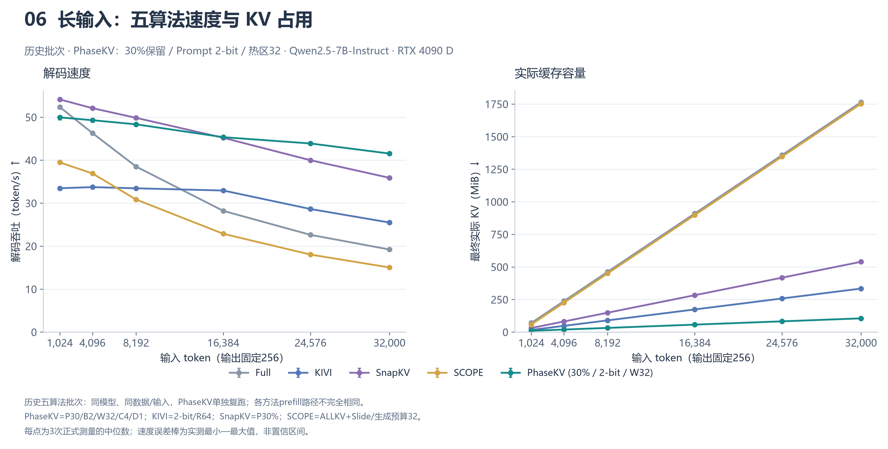
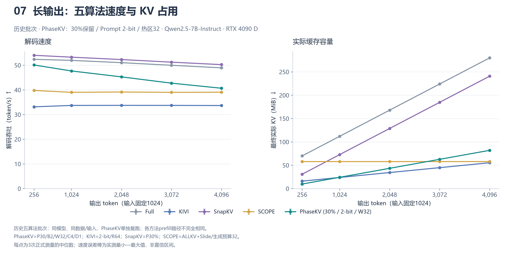
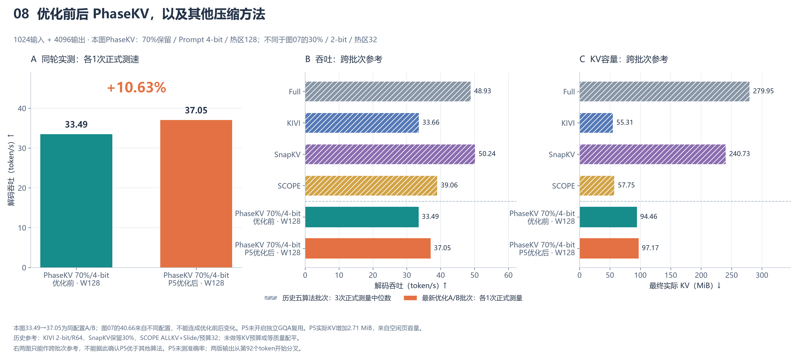

8张图 · 参数消融 / 多算法比较 / P5优化前后 · 2026-10-27

来源：2026-10-27 prompt复测；同一批256篇文档 × 4种输入预算，按任务等权。
折线纵轴局部放大；均值差异不等于统计显著。Full-matched采用一致prefill路径。

来源：2026-10-26 decode筛选；每配置4任务 × 8篇 × 2种预算，其中摘要2任务。
小样本探索，不与正式复核分数混算；QA输出普遍较短，不能据其不变推断冷区参数没有影响。

来源：2026-10-27 prompt复测；同一文档的4种预算一起重采样，未校正多重比较。
区间跨0时不能断言提升/下降；均值损失小于1分，不等于95%置信度下损失也小于1分。

来源：2026-10-27 prompt复测；每形状3次正式测量，速度与KV取中位数，预热不计入。
左侧工作负载标签为“输入 + 输出 token”；decode不含prefill，但包含缓存维护。

历史五算法批次：同模型、同数据/输入，PhaseKV单独复跑；各方法prefill路径不完全相同。
PhaseKV=P30/B2/W32/C4/D1；KIVI=2-bit/R64；SnapKV=P30%；SCOPE=ALLKV+Slide/生成预算32。
来源：2026-10-25对比报告；每方法1024条质量记录，QA与摘要分别按任务等权；不含P5质量数据。

历史五算法批次：同模型、同数据/输入，PhaseKV单独复跑；各方法prefill路径不完全相同。
PhaseKV=P30/B2/W32/C4/D1；KIVI=2-bit/R64；SnapKV=P30%；SCOPE=ALLKV+Slide/生成预算32。
每点为3次正式测量的中位数；速度误差棒为实测最小—最大值，非置信区间。

历史五算法批次：同模型、同数据/输入，PhaseKV单独复跑；各方法prefill路径不完全相同。
PhaseKV=P30/B2/W32/C4/D1；KIVI=2-bit/R64；SnapKV=P30%；SCOPE=ALLKV+Slide/生成预算32。
每点为3次正式测量的中位数；速度误差棒为实测最小—最大值，非置信区间。

本图33.49→37.05为同配置A/B；图07的40.66来自不同配置，不能连成优化前后变化。P5未开启独立GQA复用。P5实际KV增加2.71 MiB，来自空闲页容量。
历史参考：KIVI 2-bit/R64、SnapKV保留30%、SCOPE ALLKV+Slide/预算32；未做等KV预算或等质量配平。
右两图只能作跨批次参考，不能据此确认P5优于其他算法。P5未测准确率；两版输出从第92个token开始分叉。